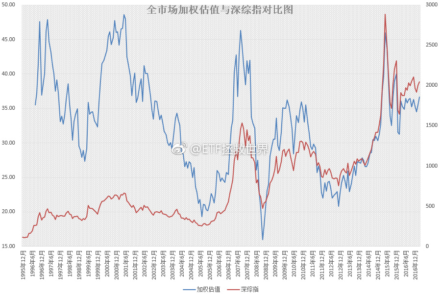
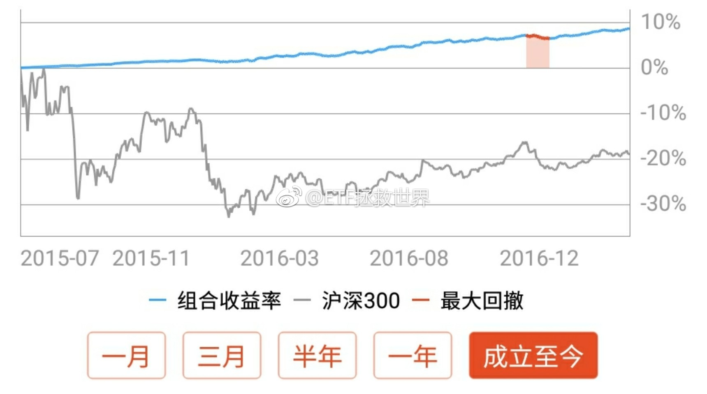

热腾腾的加权估值新鲜出炉。今天收盘后的数据，是2015年12月第三轮熔断前以来，按月计算加权估值最高的时候。大概是36.x。我个人不太相信会升到40以上，那将是另一次灾难的开始。不过，怎么说呢，金融市场的事谁说的准。真到了40以上，等着看热闹就对了。 
回复@2011DALIN:有。相当焦虑。两个层次，一个是不知道怎么炒的时候。买了跌，卖了涨。觉得自己的帐户被庄家监控了，很焦虑。第二个是大概知道怎么做了，但钱比较少的时候。震荡市，没机会。或者始终比较贵。觉得日子一天天过去，在股市赚大钱的梦越来越远。焦虑。 回头看，都是笑谈了。@ETF拯救世界:我在思考一个问题：到底每次群众是如何在各个市场被忽悠瘸了套在山顶或者半山腰站岗的？我想，可能是群众普遍有一种，“如果现在不买，也许一辈子也没希望在这里发财了”，或者“别人都赚了很多钱，我再不买就来不及了”，这种思维吧。羊群、旅鼠、从众。也许都是深深的焦虑感所造成的。焦虑，看起来无处不在。
因为这个地带是我所谓的“模糊地带”，也就是没有到一眼看胖瘦的地方，所以涨跌都真的非常非常非常正常。不用天天涨了就怕踏空跌了就怕套牢。不是这个路子。这样，出道题问问自己：涨300点，到3600点会不会难受。难受？加仓到不难受。跌300点，到3000点会不会难受。还难受？减仓到不难受。就这么简单。呐，做人呢，最重要是开心。你肚子饿不饿，我煮碗面给你吃？
我在思考一个问题：到底每次群众是如何在各个市场被忽悠瘸了套在山顶或者半山腰站岗的？我想，可能是群众普遍有一种，“如果现在不买，也许一辈子也没希望在这里发财了”，或者“别人都赚了很多钱，我再不买就来不及了”，这种思维吧。羊群、旅鼠、从众。也许都是深深的焦虑感所造成的。焦虑，看起来无处不在。
回复@奥斯特洛夫大柴夫斯基:当然是没错，但是2015年6月这么想的话现在还在坑里。仓位是概率判断的反映。获胜概率大的时候仓位会迅速增加的，时候未到而已。投资这件事我从来不急，买卖都是如此，所以赚了点钱。你急不急？//@奥斯特洛夫大柴夫斯基:赚钱还是要靠重仓呀@ETF拯救世界:继续新高。不跌我就每天不停新高。跌了我们就买，下次涨得更高。说白了就是这么回事。已买入部分年化19%。 